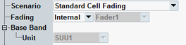

These settings are at the top of the configuration dialog.

Different test scenarios require different sets of parameters. Selecting a scenario hides/shows parts of the GUI as required by the scenario.
- "Standard Cell":
Standard GSM cell with one RF input path and one RF output path - "IQ out - RF in":
RF uplink as for "Standard Cell", baseband downlink via the I/Q board to insert, for example, an R&S SMU200A into the downlink path. - "BCCH and TCH/PDCH":
RF uplink as for "Standard Cell", in downlink the separate paths for BCCH and TCH/PDCH are provided. This routing guarantees that the BCCH is still available after a dual-band handover. Even if the BCCH band and the TCH band are wide apart and cannot be covered by a single downlink path.
Within this scenario, the separate output paths can be configured for BCCH and TCH/PDCH (converter, connector and external attenuation). Furthermore, the BCCH level and the TCH/PDCH level can be configured independently. Swapping between the "Standard Cell" and "BCCH and TCH/PDCH" scenarios is possible even during connection established. - "Standard Cell Fading":
"Standard Cell" plus fading and/or AWGN insertion. An additional parameter "Fading" is displayed, see "Fading". - "Standard Cell RX Diversity Fading":
RF uplink as for "Standard Cell", in downlink the separate two paths for faded carrier signal are provided. A fader superimposes fading on the original downlink signal for RX diversity tests. Rx diversity simulates the two different receiving paths of the MS.
An additional parameter "Fading" is displayed, see "Fading"
The individual scenarios are only offered for selection if the required software and hardware options are available.
- Single-CMW setups
In a single CMW, you can equip up to 4 TX and up to 4 SUW/SUU or up to 2 SUA. You can execute a scenario on a single CMW. But you can also use the scenario with a multi-CMW setup. - Multi-CMW setups
The instruments are controlled by an R&S CMWC. The test software including the GSM signaling application is installed and executed on the R&S CMWC.
The options can be distributed over several instruments. But the signaling units (SUA or SUU), TX modules and I/Q boards for each carrier must be in the same instrument. Example: For one carrier, you cannot use a signaling unit of one instrument plus the TX modules of another instrument.
The SW licenses are pooled in the R&S CMWC, so it does not matter where they are installed. - SUA vs. SUU
Each SUA board provides two SUA partitions. The GUI and the remote commands select SUA partitions, not SUA boards. In one CMW, you have up to four SUA partitions or up to four SUU.
For fading with the SUU, you need an I/Q board. For fading with the SUA, you need additional SUA resources.
You can combine SUA and SUU in a single CMW, but one scenario uses only SUU or only SUA, not both in parallel. A CMW with SUA cannot contain I/Q boards.
All listed options are R&S CMW-... options. Example: KE100 means R&S CMW-KE100.
The following table lists all scenarios. It covers instruments with SUA and instruments with SUU. You need either the indicated number of SUA partitions or the indicated number of SUU boards plus I/Q boards.
With SUU | With SUA | ||||
|---|---|---|---|---|---|
Scenario | TX | SUU | I/Q board1) | SUA partitions | Software options |
"Standard Cell" | 1 | 1 | - | 1 | - |
"IQ out - RF in" | - | 1 | 1 (A or F) | n.a. | - |
"BCCH and TCH/PDCH" | 2 | 1 | - | 1 | - |
"Standard Cell Fading, External" | 1 | 1 | 1 (A or F) | n.a. | KS210 |
"Standard Cell Fading, Internal" | 1 | 1 | 1 (F) | 2 2) | KS210, KE100, KE200 |
"Standard Cell RX Diversity Fading, External" | 2 | 1 | 1 (A or F) | n.a. | KS210 |
"Standard Cell RX Diversity Fading, Internal" | 2 | 1 | 1 (F) | 2 2) | KS210, KE100, KE200 |
1) Number of required I/Q boards and in brackets the board type. The first I/Q board of an instrument is R&S CMW-B510x, the second board is R&S CMW-B520x. "x" can be "A" (no internal fading) or "F" with internal fading. 2) Signaling function + fading | |||||
Commands with the selection of signaling unit:
Selects between fading via an external fader and fading via an internal fader.
For internal fading, you can select the I/Q board or SUA partition to be used. If two signaling applications use internal fading at the same time, use diverse internal faders to avoid conflict.
This parameter is only displayed for the fading scenarios.
Remote command:Configured via the scenario selection command, see "Scenario".
Selects the signaling unit to be used for a carrier. This setting is especially useful for multi-CMW setups, to control which carrier is available at which instrument.
Remote command:Configured via the scenario selection command, see "Scenario"